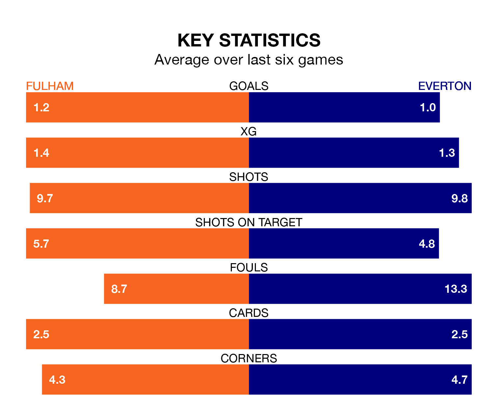

Everton travel to Fulham on late Tuesday in the Premier League.
The visitors come into the game on the back of a draw in their last match, having tied with Aston Villa 0-0 at home.
The Cottagers, meanwhile, lost their last match, 1-0 against Chelsea.
In Jordan Pickford, Everton can rely on one of the league's safest pair of hands. He has kept seven clean sheets in his 21 appearances this season, and no 'keeper has prevented the opposition scoring more often in the Premier League.
In Fulham's net, Bernd Leno has five clean sheets in 21 games. He has conceded a goal every 59 minutes, 20% more often than the 70 minutes between goals for Pickford.
In the last 10 years, Fulham and Everton have played each other on nine occasions. Fulham won four of them, Everton three, and they drew twice.
On average, the Cottagers scored 1.3 goals and the Toffees 1.2 in those matches.
Their last meeting was on December 19, when they played out a 1-1 draw.
With 24 goals in 21 games so far this season, the Toffees are scoring at below the league average rate with 1.1 goals per game. But they are conceding fewer than average too, letting in 28 goals at a rate of 1.3 per game.
The Cottagers are also below average scorers, with 1.3 goals per game, compared to a league average of 1.6. They have conceded 1.7 goals per game.
The hosts are in disappointing form in the Premier League, with two wins and four losses from their last six games.
With two wins and a draw over that period, the away side's form is slightly better – they have taken seven points from 18, compared to Fulham's six.
Fulham are 14th in the table after 21 games, of which they have won seven and drawn three, earning 24 points.
Everton are two places ahead of the Cottagers in 12th, with eight wins and three draws putting them on 27 points.
Tuesday's match will be refereed by Thomas Bramall, who has taken charge of five Premier League games so far this season, issuing one red card and booking 26 players. He has awarded two penalties.
The last Everton game Bramall refereed was the 3-0 loss away at Wolverhampton Wanderers on December 30. He is yet to oversee a match featuring Fulham this season.
Updated: 10:03 (UTC), 30/01/24